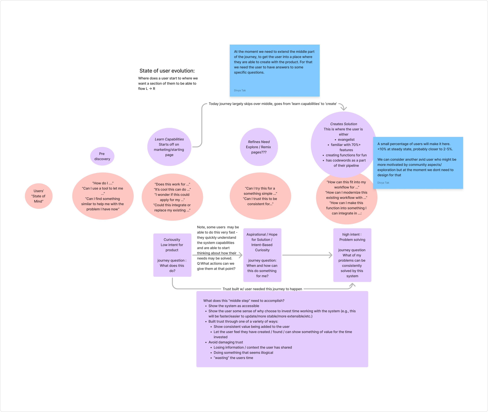

"If you weren't here to walk me through it, I would have dropped off already."
Amanda Pun · Series A PM
"What I find a bit problematic is that it's very open-ended. It obviously cannot do everything. But I'm not sure what I can try, what I cannot try."
Pier · Software engineer, Google
"I'm taking it at face value so my expectations are super high. You need to make sure you don't disappoint me if you don't set expectations from the get go."
Jon Reynolds · co-founder, Swiftkey
"The prompt helper is genius."
Marie Brayer · semi-technical VC
"I did not modify the new prompt because I was scared to break anything."
Lucas · technical founder
"I didn't know what to do tbh, so I was just checking out the changelogs."
Adnann · designer
"The main goal is to get things done — we'll worry about the quality later."
Keshvi R. · Head of Product, Balderton
"I tried an example because I don't know what you can do."
Lucas · technical founder
"Oh I didn't know I could click on this node to see the code. That's pretty cool."
Justin · product analyst
"For the first time today, I did use CW and it saved me 30 minutes in my day."
anonymous
The research's headline finding was a missing step: space for refinement — of the idea, before starting, and of the solution, after feedback. The team had been designing for a user who arrives ready to create. The "state of user evolution" board mapped what users actually do — four states, each with a journey question and the verbatim phrases users say while they're in it. The twelve user types feeding it were triaged the same way: every persona tagged high- or low-intent and sorted Must / Could / Not before a single wireframe existed.
Curiosity, low intent — "What does this do?"
No model of the product at all. "How do I …" / "Can I use a tool to let me …"
"When and how can this do something for me?"
Starts on the marketing / starting page. "Does this work for …" / "Could this integrate or replace my existing …"
The missing middle — the board literally reads "Explore / Remix pages???"
"Can I try this for something simple …" / "Can I trust this to be consistent for …"
High intent — "What of my problems can be consistently solved?"
The board's definition of who makes it: an evangelist, familiar with 70%+ of features, creating functions for fun, with Codewords in their pipeline.
"At the moment we need to extend the middle part of the journey, to get the user into a place where they are able to create with the product. For that we need the user to have answers to some specific questions."
— sticky on the board, verbatim
"A small percentage of users will make it here. <10% at steady state, probably closer to 2–5%."
— sticky on the Creates Solution node. Written before anyone could pretend otherwise.

Each one designed to be wrong.
↑ 1 of 8
From the Product Design Hypotheses doc · authored by the Agemo team, structured by Joyus.
"The tool seems powerful but it is lacking the integration into the user's workflow. The recurring themes revolve around usability ('what can I do?') and guidance ('what should I do?')."